Application Preferences
You can control the graphical appearance of LibreCAD for ProNest, set file paths for fonts, part libraries, and so forth, and set other defaults for LibreCAD for ProNest in Application Preferences (Options > Application Preferences).
Appearance
Modify the visual look of LibreCAD, including snap indicators, grid spacing, and colors used throughout the application.
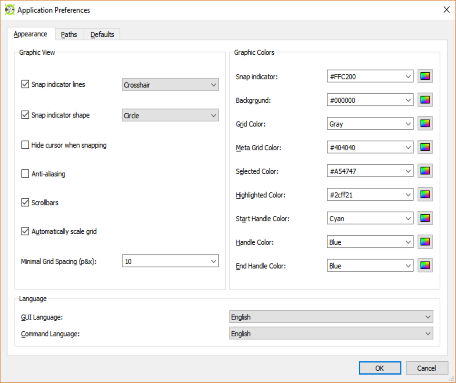
Snap indicator lines
Display lines shown for alignment purposes when using a tool.
|
Crosshair
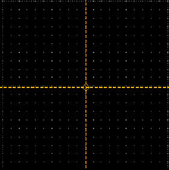 |
Crosshair 2
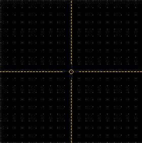 |
|
Isometric 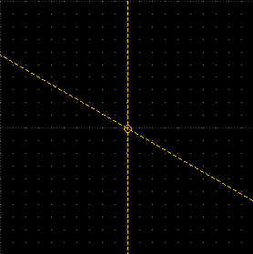 |
Spiderweb The angle of the lines adjust dynamically based on the position of the cursor.
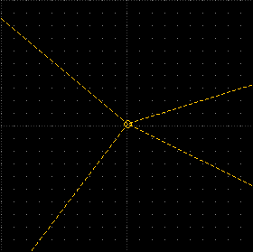 |
Snap indicator shape
Display shape of the cursor when using a tool.
Circle
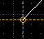
Square
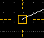
Point
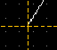
Anti-aliasing
When enabled, this option causes jagged lines to appear smoother.
When checked, this option will automatically space the grid, or adjust the scale of the Grid Status, as you zoom in or out of the drawing.
When unchecked, this option will not automatically scale the grid as adjust the zoom in the drawing. This option should remain unchecked if you want a constant grid scale, such as 1/10. If this option is unchecked, confirm that you are using the correct grid scale that is set in Current Drawing Preferences on the Grid tab.
Enter the hexadecimal value or the color name, or pick a custom color from the color picker (
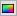
) for the color you want to use for each available option in this section.Paths
Set file paths for Translations, Hatch Patterns, Fonts, Part Libraries, the drawing Template, and a Variable File. These paths do not override any defaults in the software but are used as supplements.
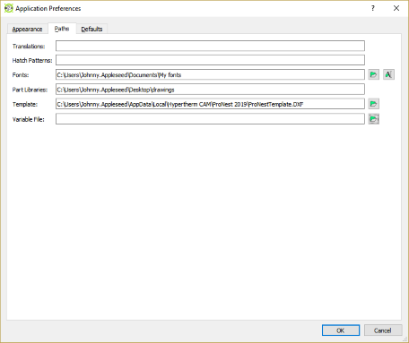
Translations
Use only if you have a QM translation file, which handles translations from English to other languages.
Hatch Patterns
Use only if you have hatch pattern files stored on your computer. When blank, the default LibreCAD hatch patterns are still available for use.
Fonts
Specify the unique folder you are using to save imported AutoCAD or Microsoft fonts.
Part Libraries
Specify the folder that stores another folder containing DXF file drawings that you want available in the Library Browser. These DXF files can be inserted into another drawing as a block.
Template
The file that LibreCAD uses as a template for new drawings.
Variable File
A variable text file that can be loaded from the Command Line when a new drawing is created.
Defaults
Configure defaults for your drawings, including units, auto-save operations, and so forth.
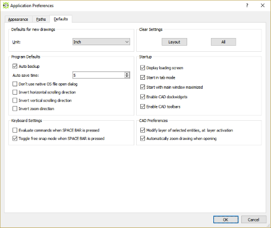
Defaults for new drawings
Units
Choose units from the dropdown menu.
Auto backup
When enabled, LibreCAD will automatically create a backup file that updates based on your Auto save time.
Don't use native OS file open dialog
When enabled, the dialog window that appears when opening a file will have the same look and feel as the LibreCAD application, instead of using the look and feel from the operating system your PC uses.
Invert . . . direction
When any option is checked, the direction of horizontal scrolling, vertical scrolling, and zoom will be inverted.
Evaluate commands when SPACE BAR is pressed
When enabled, the Space Bar can be used to submit commands in the Command Line.
Toggle free snap mode when SPACE BAR is pressed
When enabled, the Space Bar can be used to toggle the free snap mode on/off.
Clear Settings
Layout
When selected, all modifications made to the layout of the application will be cleared, and the layout will return to the original state.
All
When selected, all modifications made to the application, including layout, will be cleared, and the application will return to the original install state.
Startup
Display loading screen
When enabled, you will see the LibreCAD for ProNest splash screen appear on startup.
Start in tab mode
When enabled, the application will start up in tab mode rather than window mode.
Start with main window maximized
When enabled, the application will be maximized when opened.
Enable CAD dockwidgets
When enabled, dockwidgets can be used.
Enable CAD toolbars
When enabled, toolbars can be used.
CAD Preferences
Modify layer of selected entities, at layer activation
When enabled, any entities that are currently selected in a drawing will move to the next layer that is selected.
For example, if I have an entity on Layer 0, click the entity, and then click Layer SCRIBE, the entity I have selected will move to the SCRIBE layer.
Automatically zoom drawing when opening
When enabled, the application will automatically zoom to the extents of a drawing then when a drawing is opened.